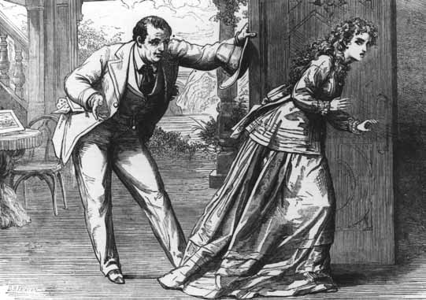

Note: This etext is based on the printing of the play that is part of the Morris L. Parrish Collection of Victorian Novelists, Princeton University Library, and is published here with the permission of the library. Page numbers of this edition are represented with bracketed numbers in the text.

Contemporary illustration of a scene from the dramatic version of The Woman in White (courtesy Andrew Gasson).